Guía Visual de Ataques WiFi - Diagramas e Explicacións
Este documento contén diagramas e explicacións dos principais protocolos e ataques WiFi usados no laboratorio vuln-wifi.lab.
Índice de Diagramas
- WPA2-PSK: 4-Way Handshake
- PMKID: Captura Sen Handshake Completo
- PMF (Protected Management Frames)
- KRACK: Key Reinstallation Attack
- WPA2-PSK vs WPA2-EAP
- WPA2-EAP: Evil Twin
- WPA2-EAP: MITM con Proxy RADIUS
- WPA3-SAE: Dragonfly Handshake
- WPA3-SAE: Forza bruta online (wacker)
- Dragonblood: Downgrade Attack
- Resumo Visual: Vulnerabilidades por Tecnoloxía
Lenda Unificada dos Diagramas
Cores nos Diagramas de Secuencia
As cores dos cadrados (rect) representan diferentes fases dos protocolos:
- 🟥 Rosa claro: Inicio do proceso - AP envía mensaxes iniciais (Message 1/4, ANonce)
- 🟩 Verde claro: Cliente demostra coñecemento - Envía credenciais/MIC (Message 2/4, SNonce)
- 🟦 Azul claro: Confirmación do AP - Envía claves de grupo (Message 3/4, GTK)
- 🟨 Amarelo claro: Confirmación final - Cliente acepta (Message 4/4, ACK)
- 🟥 Rosa medio: Fase intermedia de ataque (Evil Twin, preparación)
- 🔴 Vermello forte: Fase crítica de ataque (Captura de credenciais, compromiso)
- ⚫ Gris: Anotacións, contexto adicional ou estados intermedios
Nota: As cores vólvense máis escuras/intensas a medida que o ataque progresa ou a vulnerabilidade se agrava.
Símbolos de Vulnerabilidade
- 🔴 VULNERABLE - O ataque funciona e compromete a seguridade
- 🟢 RESISTENTE - O ataque NON funciona ou é mitigado pola tecnoloxía
- ✗ - Indica punto débil ou fallo de seguridade
- ✓ - Indica protección ou seguridade efectiva
1. WPA2-PSK: 4-Way Handshake
Explicación Resumida
O 4-Way Handshake é o proceso de autenticación entre cliente e AP en redes WPA2-PSK. Primeiro establécese a conexión 802.11 básica (autenticación e asociación), e logo intercámbianse 4 mensaxes EAPOL para derivar as claves de sesión (PTK e GTK) que cifrarán todo o tráfico posterior. Ambos os dous coñecen o contrasinal (PSK), pero nunca o transmiten pola rede; en lugar diso, usan valores aleatorios (nonces) para demostrar que o coñecen mediante códigos de integridade (MIC).
Glosario de Termos
- STA (Station): Cliente WiFi (portátil, móbil, etc.)
- AP (Access Point): Punto de acceso WiFi (router)
- EAPOL: Extensible Authentication Protocol Over LAN - protocolo para intercambiar mensaxes de autenticación
- PSK (Pre-Shared Key): Contrasinal compartido da rede WiFi (o que introduces para conectar)
- SSID: Nome da rede WiFi (exemplo: "EMPRESA-XYZ")
- ANonce: Nonce (número aleatorio) xerado polo AP
- SNonce: Nonce (número aleatorio) xerado polo cliente (Station)
- PMK (Pairwise Master Key): Clave mestra derivada do PSK mediante PBKDF2(PSK, SSID, 4096 iteracións)
- PTK (Pairwise Transient Key): Clave de sesión única para cifrar tráfico unicast entre cliente e AP
- GTK (Group Temporal Key): Clave compartida para cifrar tráfico broadcast/multicast a todos os clientes
- MIC (Message Integrity Code): Código que demostra que a mensaxe non foi modificada e que o emisor coñece as claves correctas
- PRF (Pseudo-Random Function): Función criptográfica para derivar claves a partir de valores coñecidos
Cores do Diagrama
- 🟥 Rosa (Message 1/4): AP envía ANonce ao cliente
- 🟩 Verde (Message 2/4): Cliente demostra que coñece o PSK enviando SNonce + MIC
- 🟦 Azul (Message 3/4): AP confirma e envía GTK cifrado
- 🟨 Amarelo (Message 4/4): Cliente confirma que todo está correcto
Diagrama do Proceso Completo
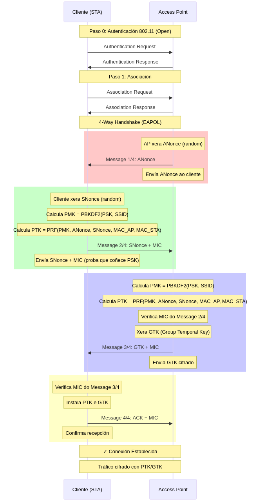
Vulnerabilidade: Ataque de Dicionario Offline (Práctica 1.1)
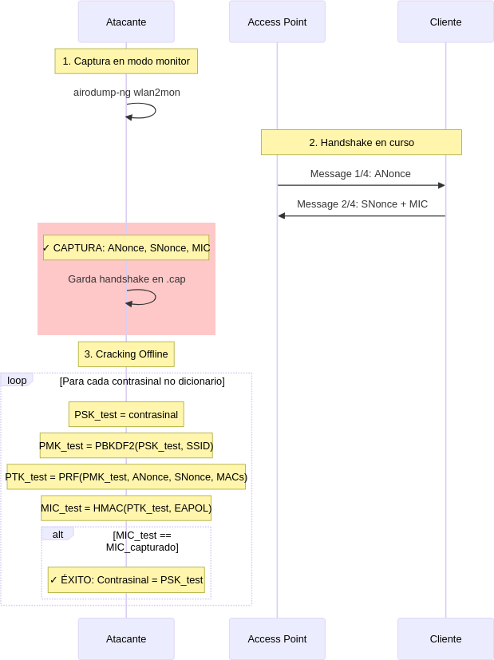
2. PMKID: Captura Sen Handshake Completo
Explicación Resumida
O PMKID é un identificador incluído no primeiro paquete EAPOL (Message 1/4) que o AP envía ao cliente durante o inicio do 4-way handshake. Este identificador é un hash que deriva da PMK (que a súa vez deriva do contrasinal), polo que permite auditar o contrasinal sen necesidade de capturar os 4 paquetes completos do handshake nin deautenticar clientes lexítimos. O atacante só necesita asociarse ao AP e capturar este primeiro paquete.
Glosario de Termos
- PMKID: Identificador da PMK = HMAC-SHA1-128(PMK, "PMK Name" || MAC_AP || MAC_STA)
- hcxdumptool: Ferramenta moderna para capturar tráfico WiFi optimizada para ataques PMKID/PSK
- hcxpcapngtool: Conversor de ficheiros de captura (pcapng) a formato hashcat (22000)
- Modo activo (-c 6a): O atacante envía activamente Association Requests ao AP para solicitar o PMKID
- hashcat modo 22000: Modo de hashcat para crackear WPA/WPA2 usando PMKID ou handshakes EAPOL
- Association Request: Solicitude do cliente para asociarse ao AP (paso previo ao handshake)
Comparación Visual
- 4-Way Handshake tradicional: Require 4 paquetes EAPOL + deautenticación → Tempo variable (minutos/horas)
- PMKID: Require 1 paquete EAPOL + asociación activa → Tempo fixo (15-30 segundos)
Diagrama do Ataque PMKID (Práctica 1.3)
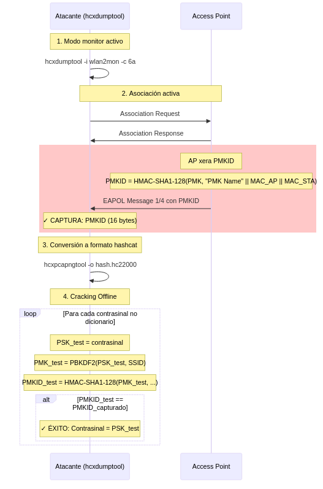
Comparación: 4-Way Handshake vs PMKID
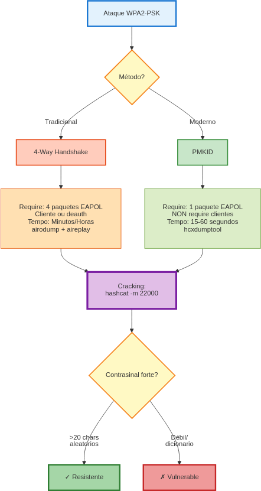
3. PMF (Protected Management Frames)
Explicación Resumida
PMF (802.11w) é unha extensión de seguridade que cifra e asina as tramas de xestión (Deauthentication, Disassociation) para evitar que un atacante poida expulsar clientes da rede. Sen PMF, calquera pode enviar tramas de deautenticación falsas porque estas tramas non están protexidas. Con PMF activo, as tramas de xestión robustas levan un MIC calculado coa PTK, polo que só poden ser xeradas por quen coñeza as claves de sesión.
Glosario de Termos
- PMF (Protected Management Frames): IEEE 802.11w - protección para tramas de xestión
- ieee80211w=0: PMF desactivado (vulnerable a deauth)
- ieee80211w=1: PMF opcional (cliente decide)
- ieee80211w=2: PMF obrigatorio (cliente debe soportalo)
- Management Frames: Tramas de xestión WiFi (Beacon, Probe, Auth, Deauth, etc.)
- Deauthentication: Trama que desconecta un cliente do AP
- Disassociation: Trama que desasocia un cliente do AP
- Robust Management Frames: Tramas de xestión que PMF protexe (Deauth, Disassoc)
- MIC con PTK: As tramas protexidas levan un código calculado coa PTK da sesión
Tramas Protexidas vs Non Protexidas
✅ Protexidas por PMF:
- Deauthentication
- Disassociation
- Robust Action Frames
❌ NON Protexidas (nin con PMF):
- Beacon
- Probe Request/Response
- Authentication (Open System)
Limitación Importante
⚠️ PMF NON protexe contra ataques de dicionario offline. Se capturas o handshake, podes crackear o contrasinal igual, pero si protexe contra expulsión forzada de clientes.
Diagrama de Protección PMF (Práctica 1.2)
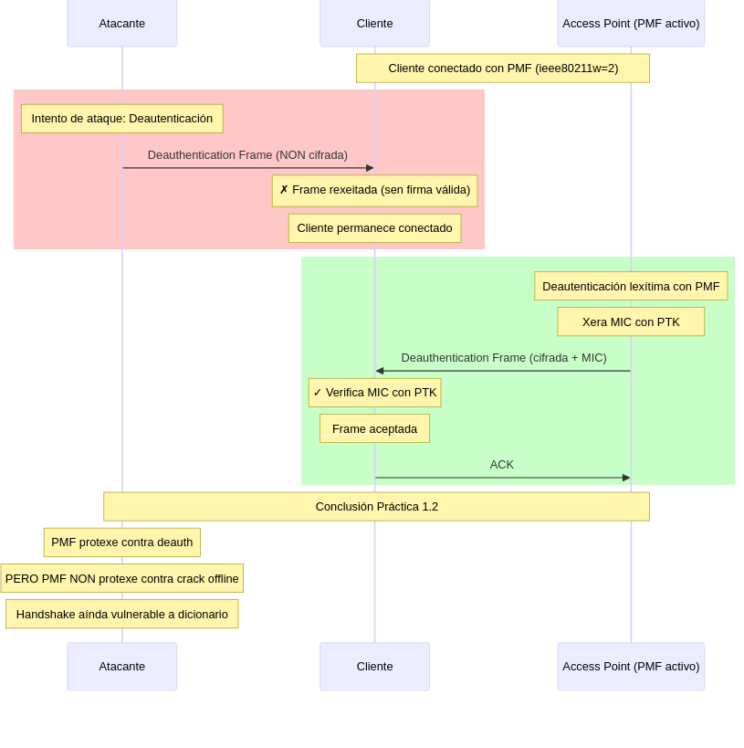
Tramas Protexidas por PMF
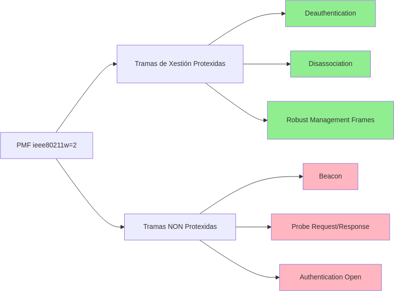
4. KRACK: Key Reinstallation Attack
Explicación Resumida
KRACK (CVE-2017-13077) é unha vulnerabilidade que explota a retransmisión do Message 3/4 do handshake. Se o AP non recibe o ACK do cliente (Message 4/4), retransmite o Message 3/4. Clientes vulnerables reinstalan as mesmas claves (PTK/GTK) ao recibir esta retransmisión, reseteando o contador de paquetes e o nonce a 0. Isto permite ao atacante descifrar e inxectar tráfico. O ataque require que o atacante estea en posición MITM para bloquear o Message 4/4 orixinal.
Glosario de Termos
- KRACK: Key Reinstallation Attack - ataque de reinstalación de claves
- CVE-2017-13077: Identificador oficial da vulnerabilidade KRACK
- Reinstalación de claves: Volver instalar as mesmas claves PTK/GTK no sistema operativo
- Nonce reset: O contador interno de cifrado resetéase a 0, permitindo reutilización
- Replay counter: Contador para evitar ataques de reproducción
- MITM (Man-in-the-Middle): Atacante entre cliente e AP interceptando e modificando tráfico
- Retransmisión: AP volve enviar Message 3/4 se non recibe confirmación
Por que WPA3-SAE é Inmune?
- PMF obrigatorio: Non se poden bloquear mensaxes de xestión
- Forward Secrecy: Novas claves en cada sesión (non reutilizables)
- SAE Handshake máis robusto: Non depende de retransmisións vulnerables
Indicadores de Vulnerabilidade
- ❌ Sistemas operativos sen parches (Linux kernel < 4.13, Android < 8.1, Windows < KB4043232)
- ❌ WPA2 sen PMF obrigatorio
- ✅ WPA3-SAE (inmune por deseño)
Diagrama do Ataque KRACK (CVE-2017-13077)
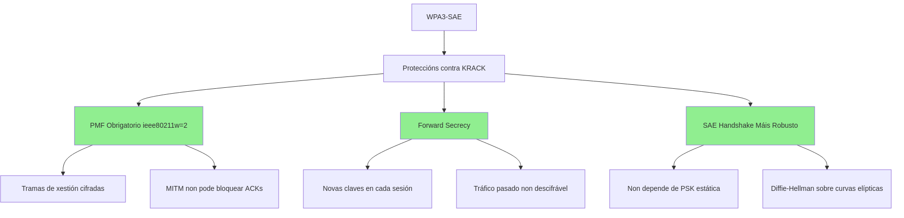
Por que WPA3-SAE é Inmune a KRACK? (Práctica 3.2)
5. WPA2-PSK vs WPA2-EAP
Explicación Resumida
WPA2-PSK usa un contrasinal compartido (PSK) para todos os usuarios, derivando a PMK directamente co PBKDF2. Isto permite ataques offline se capturas o handshake.
WPA2-EAP usa un servidor RADIUS que autentica cada usuario con credenciais únicas (usuario/contrasinal), derivando a PMK a partir dunha MSK (Master Session Key) xerada durante o intercambio EAP. Como a MSK nunca se transmite e depende de credenciais únicas, os ataques offline contra a PMK non son posibles (aínda que hai ataques específicos contra EAP como Evil Twin).
Glosario de Termos
- PSK (Pre-Shared Key): Contrasinal único compartido por todos os usuarios
- EAP (Extensible Authentication Protocol): Framework para autenticación con múltiples métodos
- RADIUS: Remote Authentication Dial-In User Service - servidor de autenticación centralizado
- MSK (Master Session Key): Clave mestra xerada polo servidor RADIUS durante autenticación EAP
- PMK derivada de MSK: A PMK en WPA2-EAP obtense da MSK, non do contrasinal directamente
- Backend Auth: Sistema de autenticación (LDAP, Active Directory, base de datos)
- Credenciais únicas: Cada usuario ten usuario/contrasinal diferente
Diferenzas Clave
| Aspecto | WPA2-PSK | WPA2-EAP |
|---|---|---|
| Autenticación | Contrasinal compartido | Usuario + contrasinal únicos |
| PMK | PBKDF2(PSK, SSID) | Derivada de MSK (RADIUS) |
| Infraestrutura | Simple (só AP) | Complexa (AP + RADIUS + backend) |
| Ataque offline PMK | ✗ Vulnerable | ✓ Resistente |
| Xestión usuarios | Imposible (1 PSK para todos) | Granular (por usuario) |
| Revogación | Cambiar PSK (afecta a todos) | Deshabilitar conta (só ese usuario) |
Comparación Arquitectónica
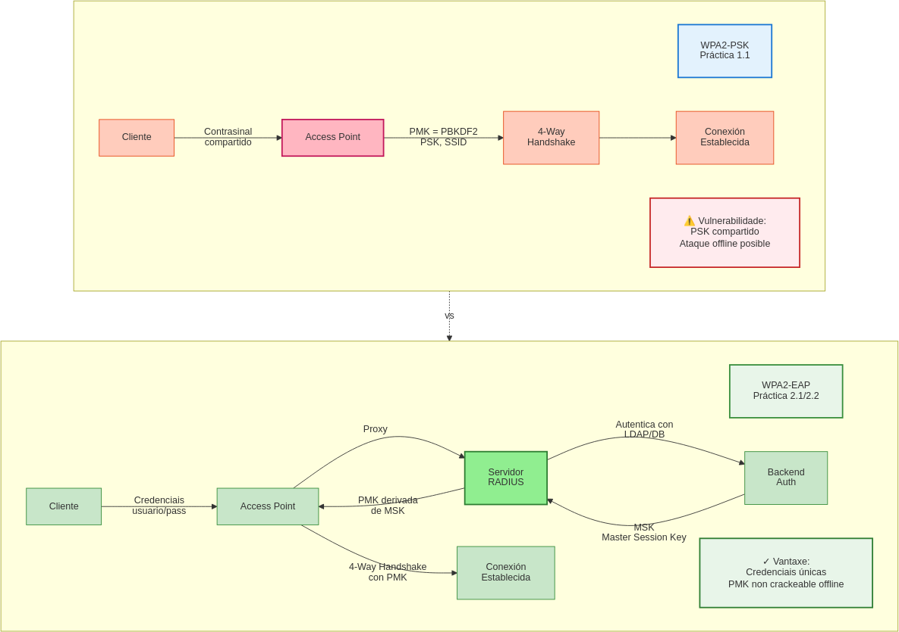
Diferenzas Técnicas
| Característica | WPA2-PSK | WPA2-EAP |
|---|---|---|
| Autenticación | PSK compartido | Usuario/Contrasinal únicos |
| PMK | PBKDF2(PSK, SSID) | Derivada de MSK (RADIUS) |
| Servidor | Non require | RADIUS obrigatorio |
| Crack Offline | ✗ Vulnerable | ✓ Resistente (PMK non directa) |
| Xestión | Simple | Complexa |
| Escalabilidade | Baixa | Alta |
6. WPA2-EAP: Evil Twin
Explicación Resumida
Un Evil Twin é un AP falso configurado co mesmo SSID que o AP lexítimo. O atacante usa hostapd-wpe (Wireless Pwnage Edition) con certificados autofirmados e forza aos clientes a conectarse mediante deautenticación do AP real. Se o cliente non valida o certificado do AP (parámetro ca_cert ausente en wpa_supplicant), acepta o certificado falso e completa o handshake EAP-PEAP/TTLS, revelando o hash MSCHAPv2 das súas credenciais ao atacante. Este hash pode ser crackeado offline con hashcat.
Glosario de Termos
- Evil Twin: AP falso que imita o SSID e configuración dun AP lexítimo
- hostapd-wpe: Versión modificada de hostapd que captura credenciais EAP
- Certificado autofirmado: Certificado TLS xerado polo atacante (non validado por CA de confianza)
- EAP-PEAP: Protected EAP - crea túnel TLS antes de enviar credenciais
- EAP-TTLS: Tunneled TLS - similar a PEAP pero máis flexible
- MSCHAPv2: Microsoft Challenge Handshake Authentication Protocol v2 (protocolo interno de PEAP/TTLS)
- Challenge Response: Cliente demostra que coñece o contrasinal respondendo a un desafío criptográfico
- ca_cert: Parámetro de wpa_supplicant que especifica o certificado CA de confianza
- hashcat modo 5500: Modo para crackear hashes MSCHAPv2 capturados
Secuencia do Ataque
- Atacante levanta Evil Twin (mesmo SSID, certificado falso)
- Deautenticación do AP real (aireplay-ng)
- Cliente conecta ao Evil Twin (mellor sinal ou único dispoñible)
- Cliente non valida certificado (ca_cert non configurado)
- Handshake EAP completo con credenciais → Atacante captura hash MSCHAPv2
- Cracking offline do hash con dicionario
Mitigación
✅ Configurar ca_cert=/path/to/server-cert.pem en wpa_supplicant
✅ Validación de certificados en clientes corporativos (GPO, MDM)
✅ HSTS/Certificate Pinning en aplicacións críticas
Diagrama do Ataque Evil Twin (Práctica 2.1)
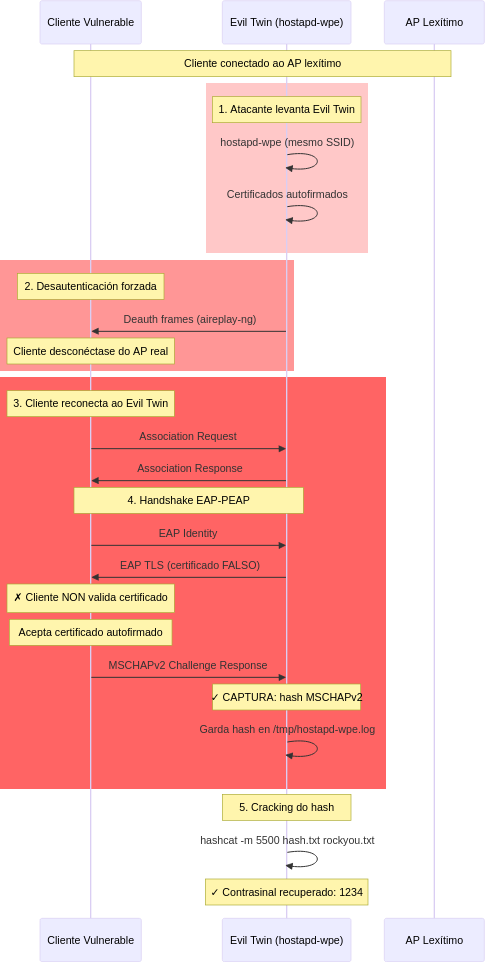
Por que Funciona o Evil Twin?
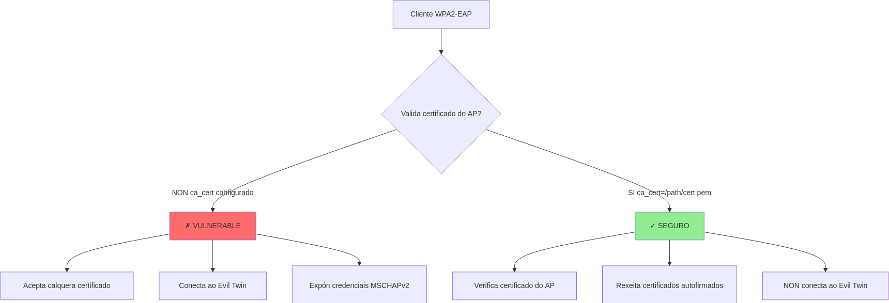
7. WPA2-EAP: MITM con Proxy RADIUS
Explicación Resumida
O ataque MITM con proxy RADIUS usa hostapd-mana para crear un AP rogue que actúa como proxy transparente entre o cliente e o servidor RADIUS lexítimo. O atacante intercepta todo o tráfico EAP, reenviaándoo ao RADIUS real, polo que o cliente si se autentica correctamente e mantén conectividade a Internet. Mentres, o atacante captura credenciais EAP, tokens, cookies HTTP/HTTPS e todo o tráfico usando ferramentas como mitmproxy ou sslsplit.
Glosario de Termos
- hostapd-mana: Versión de hostapd con capacidades de proxy RADIUS e ataques avanzados
- Proxy transparente: O cliente cre estar conectado ao AP real, pero todo pasa polo atacante
- RADIUS forwarding: Reenvío de mensaxes RADIUS entre cliente e servidor real
- mitmproxy: Proxy HTTP/HTTPS que intercepta e modifica tráfico web
- sslsplit: Ferramenta para descifrar conexións TLS mediante ataque MITM
- Karma attack: Técnica onde o AP falso responde a calquera Probe Request
- Token hijacking: Roubo de tokens de sesión (cookies, JWT, OAuth)
Diferenza con Evil Twin
| Característica | Evil Twin (hostapd-wpe) | MITM Proxy (hostapd-mana) |
|---|---|---|
| Proxy RADIUS | ❌ Non | ✅ Si |
| Cliente auténticase | ✓ Si (con servidor falso) | ✓ Si (con servidor real) |
| Cliente ten Internet | ❌ Non (perde conexión) | ✅ Si (mantén conexión) |
| Captura | Hash MSCHAPv2 | Credenciais + tráfico completo |
| Duración | Puntual (cliente desconéctase) | Continua (mentres cliente esté conectado) |
| Detección | Fácil (perda de conexión) | Difícil (cliente non nota nada) |
Secuencia do Ataque
- Atacante levanta AP rogue con hostapd-mana (proxy RADIUS activo)
- Configuración apunta ao RADIUS lexítimo
- Cliente conecta ao AP rogue (deauth do AP real ou mellor sinal)
- Handshake EAP → Atacante captura credenciais e reenvía ao RADIUS real
- RADIUS autentica correctamente → Cliente obtén IP e Internet
- Todo o tráfico HTTP/HTTPS pasa por mitmproxy/sslsplit → Captura continua
Diagrama do Ataque MITM (Práctica 2.2)
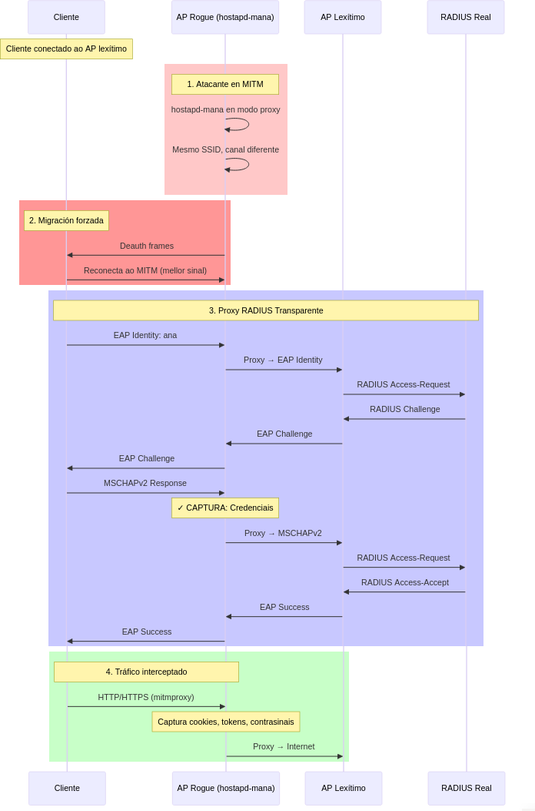
MITM Proxy vs Evil Twin
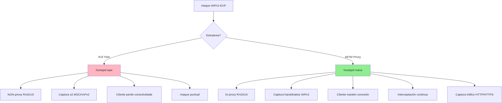
8. WPA3-SAE: Dragonfly Handshake
Explicación Resumida
WPA3-SAE (Simultaneous Authentication of Equals) usa o protocolo Dragonfly baseado en Diffie-Hellman sobre curvas elípticas. A diferenza de WPA2-PSK, onde a PMK deriva directamente do contrasinal (PBKDF2), en WPA3-SAE a PMK derívase dun segredo compartido K calculado mediante intercambio DH con escalares aleatorios únicos por sesión. Isto proporciona Forward Secrecy (sesións pasadas non descifrables aínda que obtén o contrasinal) e resistencia a ataques offline (non hai forma de probar contrasinais sen interactuar co AP en tempo real).
Glosario de Termos
- SAE (Simultaneous Authentication of Equals): Método de autenticación de WPA3 baseado en Dragonfly
- Dragonfly: Protocolo PAKE (Password Authenticated Key Exchange) resistente a ataques offline
- PAKE: Protocol que permite acordar claves usando contrasinal sen revelalo nin permitir ataques offline
- Diffie-Hellman (DH): Algoritmo para acordar segredo compartido sobre canle insegura
- Curvas elípticas: Estruturas matemáticas usadas para criptografía asimétrica eficiente
- Escalar aleatorio (s): Número privado aleatorio usado en DH (non se transmite nunca)
- COMMIT: Mensaxe SAE que contén o punto da curva calculado co escalar
- CONFIRM: Mensaxe SAE que contén un hash do segredo compartido para confirmación mutua
- Forward Secrecy: Propiedade que garante que sesións pasadas non son descifrables aínda que comprometan claves futuras
- K (segredo compartido): Valor calculado mediante DH(escalar_propio, COMMIT_outro, contrasinal)
Fases do SAE Handshake
- Commit: Cliente e AP intercambian COMMITs (puntos de curva derivados de escalares aleatorios)
- Confirm: Ambos calculan K mediante DH e envían hash de K para confirmación mutua
- 4-Way Handshake: Igual que WPA2, pero usando a PMK derivada de K (non de PBKDF2)
Por que é Resistente a Ataques Offline?
WPA2-PSK: PMK = PBKDF2(contrasinal, SSID)
↓
Determinista → Atacante pode probar contrasinais offline
WPA3-SAE: K = DH(s_C, COMMIT_AP, contrasinal)
↓
Require s_C aleatorio (non capturable) → Imposible probar offline
Diagrama do SAE Handshake (Práctica 3.1)
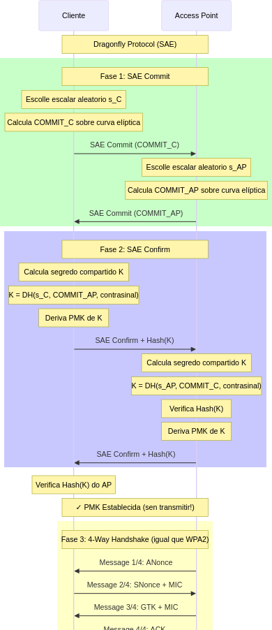
Por que WPA3-SAE é Resistente a Ataques Offline? (Práctica 3.1)
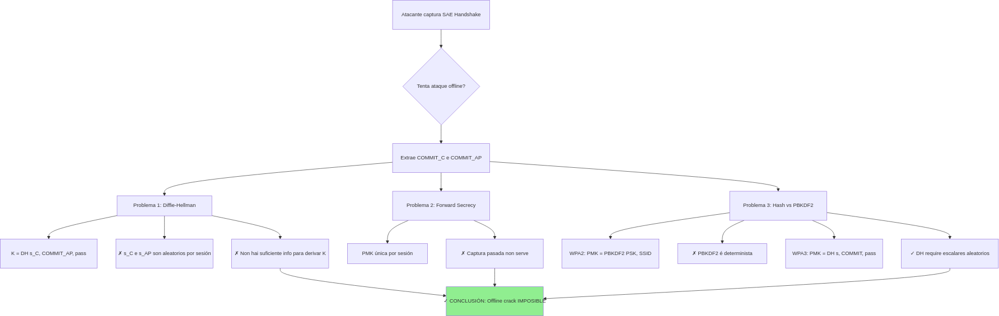
Comparación: WPA2-PSK vs WPA3-SAE
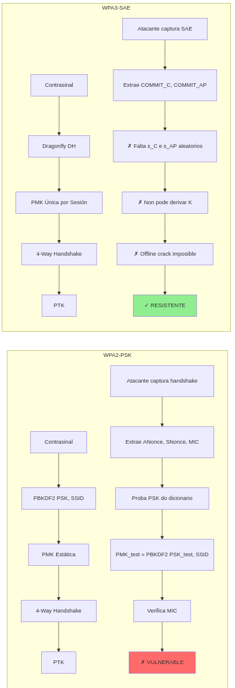
9. WPA3-SAE: Forza bruta online (wacker)
Explicación resumida
En WPA3-SAE non existe un vector de cracking offline equivalente a WPA2-PSK: capturar o intercambio SAE non permite probar contrasinais sen falar co AP (Forward Secrecy). Porén, si é posible un ataque online: probar palabras dunha wordlist directamente contra o AP, a ritmo limitado polas propias respostas SAE. Este é o obxectivo de wacker.
Idea clave: wacker non “rompe” SAE; simplemente automatiza intentos de autenticación en tempo real (ruidoso e detectable).
Comparativa rápida: WPA2-PSK offline vs WPA3-SAE online
| Característica | WPA2-PSK offline (aircrack-ng/hashcat) | WPA3-SAE online (wacker) |
|---|---|---|
| Captura de handshake | ✅ Necesaria | ✗ Non necesaria |
| Probas por segundo | ✅ Millóns (GPU) | ✗ ~80–150 (limitado pola rede) |
| Detectable polo AP/IDS | ✗ Baixo | ✅ Alto (tráfico SAE continuo) |
| Defensa efectiva | Contrasinal non en wordlist | Contrasinal forte (≥ 20 chars aleatorios) |
Glosario mínimo
- wacker: ferramenta de dicionario online para WPA3-SAE que usa un
wpa_supplicantparcheado para lanzar intentos SAE contra o AP. - BSSID: MAC do AP (necesaria para apuntar o obxectivo correcto).
- FREQ: frecuencia (MHz) do canal do AP (ex.: 2437 para canal 6).
- Managed mode: a interface do atacante debe estar en modo managed (non monitor).
Fluxo do ataque (alto nivel)
- Identificar BSSID e frecuencia do AP WPA3-SAE (por exemplo con
iw dev wlan0 infono namespace do AP). - Preparar a interface atacante en modo managed (parar
airmon-ngse estaba activo). - Executar wacker con wordlist e parámetros:
--interface,--bssid,--ssid,--freq. - O AP responde “OK/FAIL” a cada intento; se a palabra está no dicionario, wacker atópaa.
Mitigacións recomendadas
- ✅ Contrasinal ≥ 20 caracteres aleatorios (única mitigación realmente sólida fronte a forza bruta online).
- ✅ WPA3-only (evitar modo transición WPA2/WPA3 para non abrir downgrade).
- ✅
sae_anti_clogging_thresholdenhostapd.confpara limitar taxas de intentos SAE. - ✅ Monitorización: moitos fallos SAE consecutivos son un indicador claro de ataque.
Diagrama WPA3-SAE: forza bruta online (Práctica 3.1)
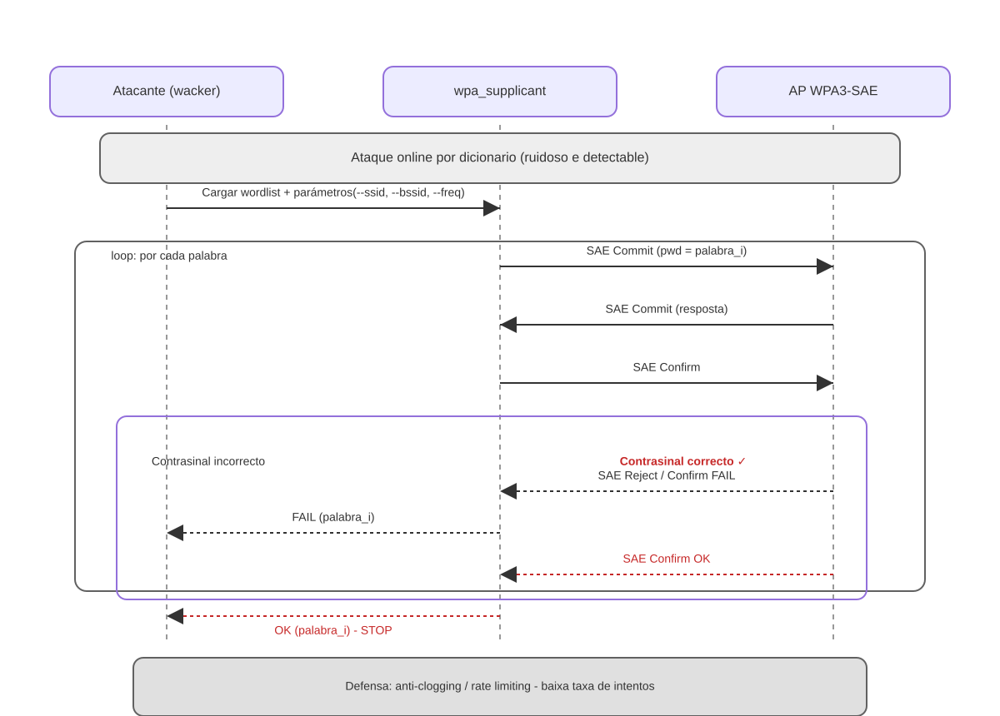
Defensa práctica: anti-clogging e rate-limiting (SAE)
En WPA3-SAE, un atacante non pode “crackear” offline: cada intento require falar co AP.
Para frear forza bruta online, moitos AP activan anti-clogging: cando detectan demasiadas negociacións SAE (ou carga elevada), esixen un token anti-clogging extra antes de continuar, aumentando o custo e a latencia de cada intento.
Complementariamente, o rate-limiting (p.ex. atrasos progresivos, backoff e límites por estación/IP/MAC) reduce a taxa de probas a uns poucos intentos por minuto, facendo que un dicionario deixe de ser viable en tempos realistas.
10. Dragonblood: Downgrade Attack
Explicación Resumida
Dragonblood (CVE-2019-9494/9495) é un conxunto de vulnerabilidades en implementacións antigas de WPA3-SAE (hostapd/wpa_supplicant ≤2.7). O ataque combinado usa dragondrain (DoS mediante inundación de SAE Commits) para saturar o AP real, mentres o atacante levanta un Evil Twin en modo WPA2-PSK co mesmo SSID. Clientes configurados en modo transición WPA2/WPA3 (wpa=2+3) aceptan o downgrade e conectan ao AP falso en WPA2, onde o atacante captura o handshake tradicional crackeável offline. WPA3 puro (wpa=3) non é vulnerable.
Glosario de Termos
- Dragonblood: Nome colectivo das vulnerabilidades CVE-2019-9494 e CVE-2019-9495 en WPA3
- CVE-2019-9494: Side-channel timing attack (cache-based) contra SAE
- CVE-2019-9495: Side-channel cache attack (permite descubrir contrasinal con moitas observacións)
- dragondrain: Ferramenta de DoS contra APs WPA3 mediante flood de SAE Commits
- SAE Commit flood: Envío masivo de SAE Commits con MACs aleatorias para saturar o AP
- Modo transición (wpa=2+3): Configuración que acepta tanto WPA2 como WPA3 (vulnerable a downgrade)
- Downgrade attack: Forzar cliente a usar versión menos segura dun protocolo
- sae_pwe: SAE Password Element (configuración que mitiga timing attacks)
- sae_pwe=0: Hash-to-Element con timing vulnerable
- sae_pwe=2: Hash-to-Element con protección contra timing (recomendado)
Secuencia do Ataque Dragonblood
- DoS con dragondrain: Inundar AP WPA3 con SAE Commits falsos (1000+ por segundo)
- AP satura CPU → Non pode atender clientes lexítimos
- Evil Twin WPA2-PSK: Levantar AP falso (mesmo SSID, só WPA2)
- Cliente intenta conectar ao AP real → Falla (DoS)
- Cliente detecta Evil Twin → Downgrade a WPA2 (modo transición activo)
- Captura handshake WPA2 → Cracking offline tradicional
Mitigacións
✅ Actualizar software: hostapd/wpa_supplicant >= 2.10
✅ Só WPA3: wpa=3 (desactivar transición)
✅ PMF obrigatorio: ieee80211w=2
✅ sae_pwe=2: Protección contra timing attacks
✅ Desactivar grupos SAE débiles: sae_groups=19 (só grupo seguro)
✅ Contrasinais fortes: >20 caracteres aleatorios
Configuración Segura
# hostapd.conf (WPA3 puro)
wpa=3 # Só WPA3 (non 2+3)
wpa_key_mgmt=SAE
rsn_pairwise=CCMP
ieee80211w=2 # PMF obrigatorio
sae_pwe=2 # Protección timing
sae_groups=19 # Só grupo seguro
sae_password=ContrasinaMoiForte123!@#
Resumo de Ataques por Tecnoloxía
| Tecnoloxía | Vulnerable a | Resistente a |
|---|---|---|
| WPA2-PSK | Dicionario offline, PMKID, Deauth | - |
| WPA2-PSK + PMF | Dicionario offline, PMKID | Deauth |
| WPA2-EAP | Evil Twin, MITM, MSCHAPv2 crack | Dicionario offline de PMK |
| WPA3-SAE (≥2.10) | - | Dicionario offline, KRACK, Deauth |
| WPA3-SAE (≤2.7) | Dragonblood, Downgrade | Dicionario offline básico |
Diagrama do Ataque Dragonblood (Práctica 3.3)
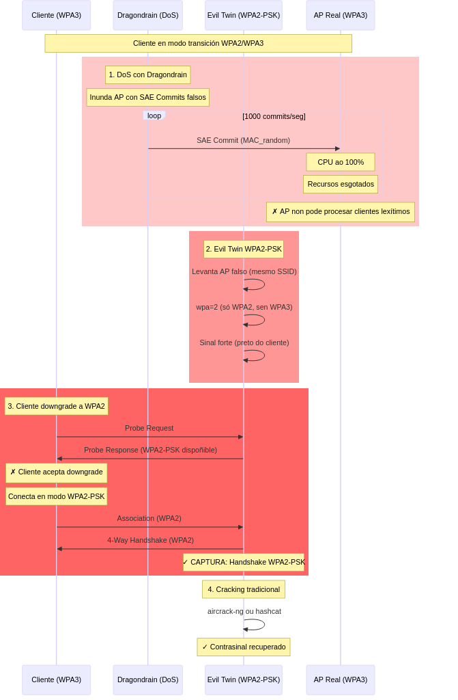
Vulnerabilidade: Modo Transición WPA2/WPA3
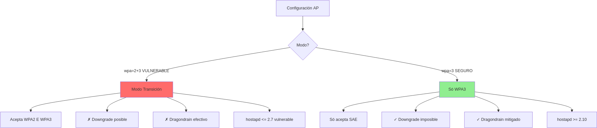
Mitigacións Dragonblood
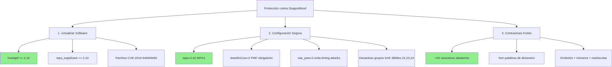
11. Resumo Visual: Vulnerabilidades por Tecnoloxía
Referencias das prácticas (README): PDF + docs/ + escenario wifilabctl
Neste laboratorio, unha Práctica P#.# é un paquete coherente formado por:
- PDF (Taller-HE): manual oficial da práctica.
- docs/: guía operativa en Markdown (co mesmo fluxo de comandos).
- Escenario
wifilabctl: a topoloxía que se desprega automaticamente (sudo wifilabctl up <escenario>).
Polo tanto, no diagrama “Vulnerabilidades por Tecnoloxía”, as etiquetas P#.# interprétanse como:
P#.# → (PDF + docs/ + escenario), seguindo a táboa “Correspondencia entre Manuais PDF e Escenarios” do README.md.
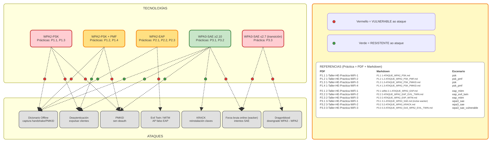